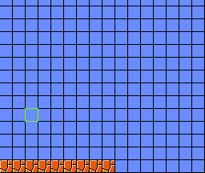
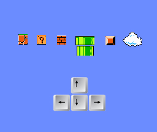

The following is a list (in reverse chronological order) of updates to my final project.
To begin work on the project we started by making the existing code compatible with the idea going forward. The game I made for the midterm had the level and enemies hard coded into it which is not practical for having many different levels. The game has now been altered to read in this information from a text file. This means that the level generator we are building will need to generate text files with all the data. Then installing the levels will be as simple - you will just need to copy two text file into the game directory. There is a separate file for the level data (tiles) and a separate file for the enemies.
I have also created a mock-up for how the level creator might look. This might still change but this is how im imagining it looking currently. The interface start with a grid that has all "sky" tiles. These tiles have no collision and the player can pass through them. The green outline shows the currently selected tile and the user can select a different tile using the arrow keys. When a desired tile is selected a user can press a certain key on the keyboard which will change that tile to a different tile (for example the brick tile). The bottom row in this mock-up has a few tiles added but the majority of them are empty. Once all the tiles are added an export option will allow the level to be turned into a text file which can then be used as a level for the actual game.
Having a bunch of different keyboard keys is probably hard for the user to remember but this is where the makey-makey board comes in. The makey-makey will be used to create a controller which has pictures on it which the user can click to insert tiles. The following is a mock up of this controller. Each tile (or group of tiles) seen on this controller is actually a button which the user can use to insert those tiles at the currently selected spot. The arrow keys on the bottom are used to select the spot where the tiles will be inserted.
For my final project I am planning to build on my remake the classic Super Mario Brothers game. During the design of this game I realized how tedious it is to map out a level for use in the game. So for my final project I am planning on making an interface for the creation of levels for the game I made.
The program will start with a grid of "sky blocks" and allow each block to be replaced by another by the user. The user will be able to use a graphical interface to design the level. The resulting array will be output to a text file which can then be read in by the main program. In this way a user will be able to create and add levels to the game.
This will require some reworking of the game I designed for the midterm to support levels read in from files. The list of enemies will also have to come from an external fine rather than be hardcoded into the game.
The controller will be created using a makey-makey board. I am going to hook up buttons to the board and create labels for each button which will specify what each button does. There will be a set of arrows to move the "cursor" and a button for each type of block.